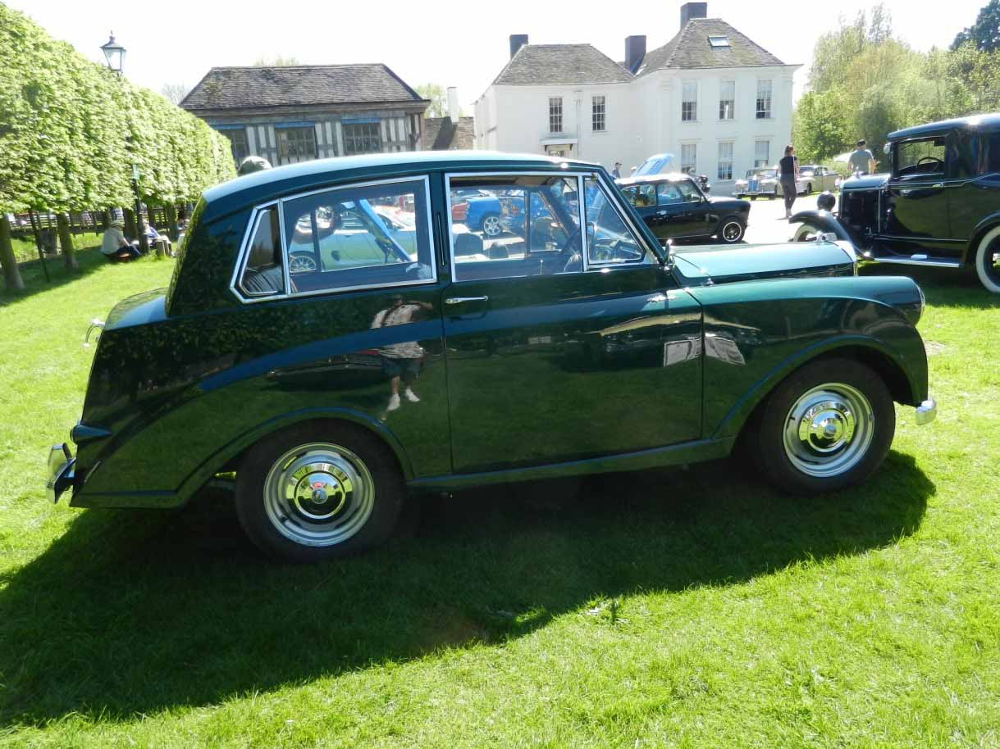

<link href="{{ site.baseurl }}/events/article.css" rel="stylesheet" type="text/css">
<main>
    <article>
        <ol id="breadcrumb">
            <li>
                <a href="{{ site.baseurl }}/">Home</a>
            </li>
            <li>
                <a href="{{ site.baseurl }}/events">Events</a>
            </li>
            <li>
                <a href="{{ site.baseurl }}/events/local">Local</a>
            </li>
            <li>Middleton Hall 2018</li>
        </ol>
        <div id="content">
            <h1>Middleton Hall, Near Tamworth, Warwickshire</h1>
            <h2>5<sup>th</sup> May 2018</h2>
            
            <p>What great bank holiday weather! No excuse not to get the Mayflower out today. I know that the Middleton Hall meet, a gentle 30 miles down the A5, gets busy in good weather so I decided to set out early and aim to arrive at about 10:30 AM for the 11 AM start. All was going well until we were going around the edge of Tamworth and then we hit a big traffic jam. I had forgotten that the route takes you past the entrance to Drayton Manor Theme Park and, of course, it was a scorching bank holiday Sunday.</p>
            <p>After about 20 minutes of inching along in the line of traffic the temperature gauge had climbed to maximum and we lost power. So a push to a handy drive way, bonnet up and a cooling orange juice was the order of the day. Interestingly only 2 classics passed us all the while we were waiting for the temperature gauge to edge down to half way. Clearly there is a way of avoiding this route – something to investigate when I get home tonight.</p>
            <p>Fortunately, the car started first time once it had cooled. It hadn’t boiled over and had lost no water. Now the decision was to rejoin the queue or retrace our steps back to Leicestershire. A local had stopped to ask if we needed help and had told us that the entrance to Drayton Manor was only another 150 yards away and the road would be clear after that. As we were only 2.5 miles from the hall I decided to go for it and we eventually arrived at noon.</p>
            <p>The marshals were struggling to find room for everyone but we got parked up and relaxed with a coffee and bacon butty. We had a pleasant 2½ hours chatting to fellow owners and enthusiasts followed by a pleasant hour on the road home with no jams or incidents. And yes, I did find a route avoiding Drayton Manor for next time. And yes, an electric radiator fan is on order.</p>
            <p>Paul Burgess (1200)</p>
        </div>
    </article>
    <aside>
        <h2>Members’ cars in attendance</h2>
        <ul class="disableListStyles">
            <li>
                <h3>Paul Burgess</h3>
                <div>
                    <div class="numberPlateMarker">NKA 947</div>
                </div>
            </li>
        </ul>
    </aside>
</main>
